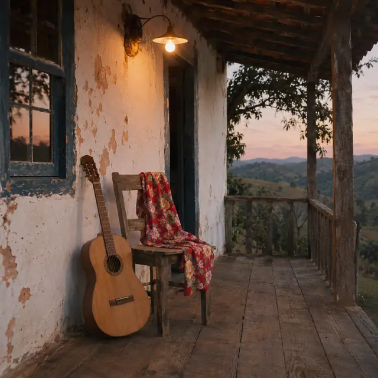
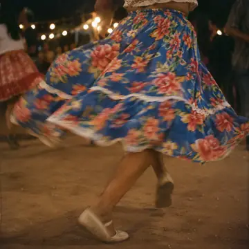
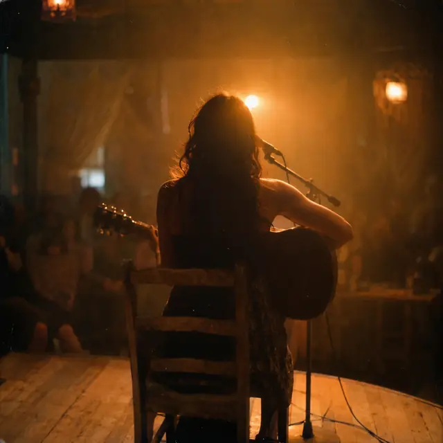

Cantora e compositora · Ubá, MG
NinaTaquaral
Forró e sertanejo romântico, com letra minha.

LançamentosModa de Varanda
O disco saiu este ano. Gravamos quase tudo ao vivo, todo mundo na mesma sala.
Recado no Para-brisa
Um bilhete deixado no carro errado e o que veio depois.

Saia de Chita Azul
Forró pra dançar agarradinho.
O discoDez faixas
Metade é pra dançar. A outra metade é pra ouvir na estrada.
- Moda de VarandaA faixa que dá nome ao disco.
- Recado no Para-brisaTambém saiu como single.
- Saia de Chita AzulForró.
- Bule Esmaltado
- Último Circular
- Quintal da Dona Zica
- Chave Debaixo do Tapete
- Lua de Paiol
- Sanfona Emprestada instrumental
- Manda Notícia, Mineiro
Escrevo do jeito que a gente conversa na cozinha de casa.

Show de voz e violãoSobreQuem canta
Comecei cantando em festa de família e não parei mais.
Sou de Ubá, na Zona da Mata. Toco violão desde os doze anos e escrevo minhas músicas desde os dezesseis.
Hoje faço show sozinha ou em trio, com sanfona e zabumba. No repertório entram as minhas e os forrós que todo mundo canta junto.
- GênerosForró e sertanejo romântico
- FormaçãoVoz e violão, ou trio
- DiscoModa de Varanda
- CidadeUbá, MG
ContrateShow na sua festa
Me mande a data, a cidade e o tipo de evento. Respondo com valor e formação.
@ninataquaral